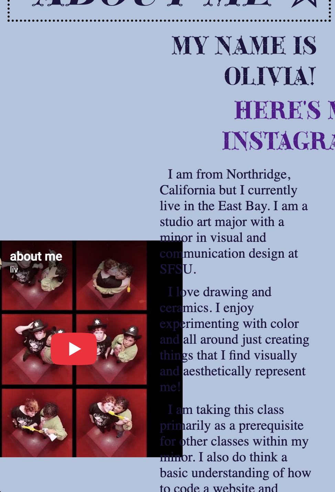
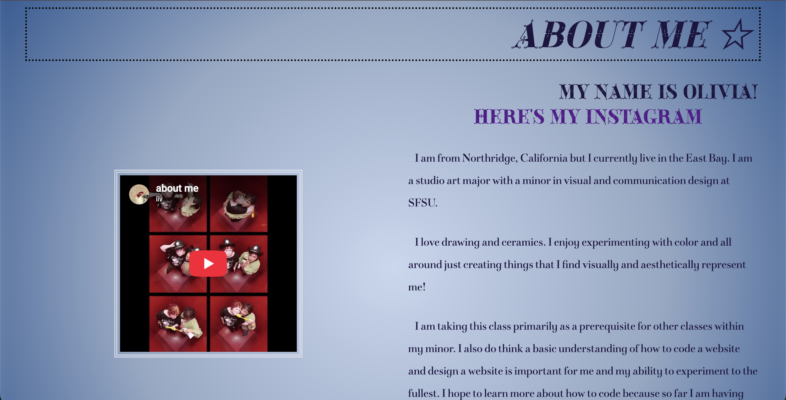
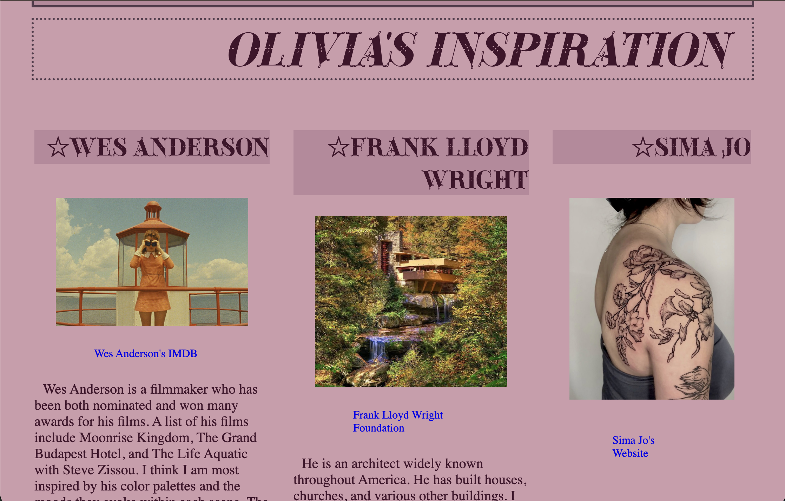
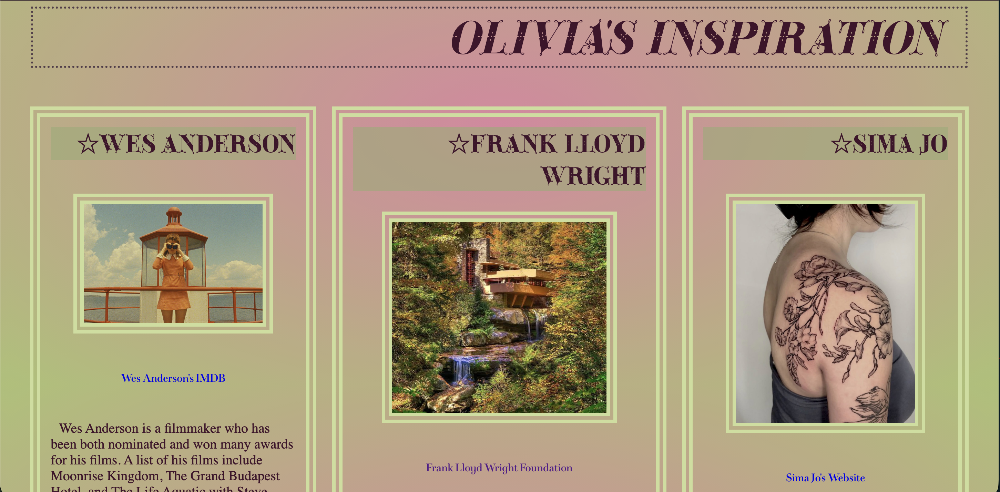
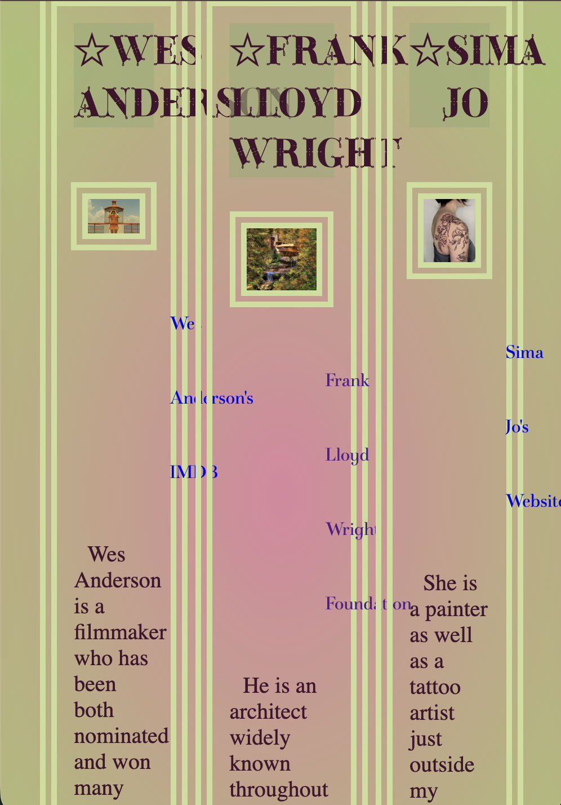

About Me Issues + Furthering Sketchbook Cohesion
10/20 1:40pm I have been trying to edit the about me page so that when the browser shrinks in size the spacing between the text, navigation, and the video stay relatively the same size and I have not been able to figure it out yet. I tried adjusting each individual ratio of the child containers and the parent container so the nav would take up 20%, the video 30%, and the text 50% but it doesn't seem to make a difference. I also thought about adjusting the position of the navigation bar on this page but I think I may just keep the orientation the same.
10/26 4:59pmUPDATE: I fixed the issue with this page. The iframe had a specific width and height already set within the tag which made it so the ratio of the visible video could not shrink down lower than what it was set to. Obviously I deleted that and set the iframe to a percent width. Then I changed the widths in the flex containers and now the video adjusts with the size of the browser.
One thing I am not sure of is if the goal is for pages to be flexible and work on several devices and browser sizes then why does my page look so ugly and unformatted when the browser size shrinks? Am I doing something wrong and there is a solution I am not seeing or am I completely misunderstanding the goal of "flexible design?"
10/23 4:30pmEditing the About me Page: I put a radial gradient on this page too and I'm not in love with it. Still not sure what I want to do with it. I think maybe, since a big part of my life is just sitting and drawing, I could incorporate a drawing or some kind of art into the background of the body? I am still deciding between previously drawn or if I want to draw something specifically for the page. Until then it will remain the unsatisfying radial gradient.


Inspiration Page Cohesion
10/23 2:01pmCurrently editing the Inspo Page. When I first watched the background lecture I didn't have an idea for how I wanted to incorporate gradients or background images until now. I added a yellow-green and pink radial gradient which I think speaks to the critiques from my peer review. I will further adjust the text hierachy because the current h2 design no longer fits the theme and feels a little removed instead of showing the second most important text on the page.
10/23 3:01pmPROBLEM! So the issue I was having with the video overlapping the text is now happening with the text on my inspiration page. This is really irritating me to my core since it is one of the first major issues I am having that I haven't been able to figure out yet. I have implemented flexbox on this page (Checkpoint Two) and I found that the images connected to these blocks of text go down proportionately since I have them entered as children of the child flexbox. I'm wondering if maybe that is the solution for the inspiration page and the about me page.



☆Week 10: Interaction as Cohesion
11/09 8:51pmOn the landing page I made it so the boxes of the navigation will get slightly bigger and the text will change to a light green when you hover over them. I think I want to incorporate this scale change throughout the navigation system on my website. I also added a small doodle I made to the about me page and used it as a link to my instagram. When you hover over it the image spins 5040 degrees (AKA 14 times) over the course of 2 seconds. While this may not add to the cohesion and it is simply because I learned how to do it I think it's funny so....
11/09 9:28pmI tried to incorporate the scale change into the navigation bar on the about me page and it is not changing in the way I had hoped. When I was playing with this before I got the text to change scale in the navigation bar and it wasn't what I wanted so I reduced it to just the color change but now I can't get the code to work and I'm confused. This isn't my biggest concern because I'm not sure I even want the scale to change in the navigation system on each page but the assignment lowkey said to have it change and have it change over a duration so I guess I'm forced to. I will probably continue to troubleshoot this later on but for now I'm tired.
11/09 9:39pmI just pushed the changes I made to github and the transform I added to the landing page doesn't work on my pages url but does work on vsc and I don't know what the problem is because it looks like the code was pushed correctly so it should be working when I hover over the navigation on the landing page but it just doesn't. I hate when stuff doesn't work it makes me sad.